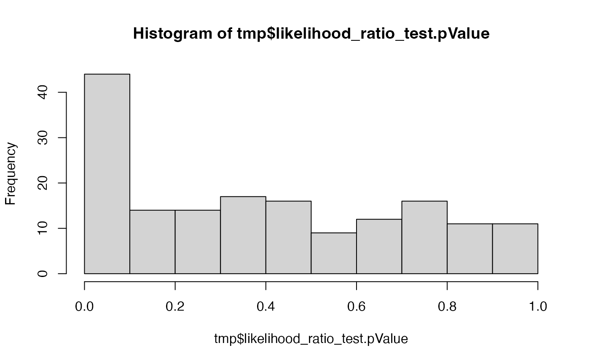

Likelihood ratio test
LR_test(
modelProteinF,
modelName,
modelProteinF_Int,
modelName_Int,
subject_Id = "protein_Id",
path = NULL
)table with models (see build model)
name of model
reduced model
name of reduced model
subject id typically Assession or protein_Id
default NULL, set to a directory if you need to write diagnostic plots.
Other modelling:
Contrasts,
ContrastsMissing,
ContrastsModerated,
ContrastsPlotter,
ContrastsProDA,
ContrastsROPECA,
ContrastsTable,
INTERNAL_FUNCTIONS_BY_FAMILY,
Model,
build_model(),
contrasts_fisher_exact(),
get_anova_df(),
get_complete_model_fit(),
get_p_values_pbeta(),
isSingular_lm(),
linfct_all_possible_contrasts(),
linfct_factors_contrasts(),
linfct_from_model(),
linfct_matrix_contrasts(),
merge_contrasts_results(),
model_analyse(),
model_summary(),
moderated_p_limma(),
moderated_p_limma_long(),
my_contest(),
my_contrast(),
my_contrast_V1(),
my_contrast_V2(),
my_glht(),
pivot_model_contrasts_2_Wide(),
plot_lmer_peptide_predictions(),
sim_build_models_lm(),
sim_build_models_lmer(),
sim_make_model_lm(),
sim_make_model_lmer(),
strategy_lmer(),
summary_ROPECA_median_p.scaled()
data_2Factor <- prolfqua::sim_lfq_data_2Factor_config(
Nprot = 200,
with_missing = TRUE,
weight_missing = 2)
#> creating sampleName from fileName column
#> completing cases
pMerged <- LFQData$new(data_2Factor$data, data_2Factor$config)
pMerged$config$table$get_response()
#> [1] "abundance"
pMerged$factors()
#> # A tibble: 16 × 4
#> sample sampleName Treatment Background
#> <chr> <chr> <chr> <chr>
#> 1 A_V1 A_V1 A X
#> 2 A_V2 A_V2 A X
#> 3 A_V3 A_V3 A X
#> 4 A_V4 A_V4 A X
#> 5 B_V1 B_V1 B X
#> 6 B_V2 B_V2 B X
#> 7 B_V3 B_V3 B X
#> 8 B_V4 B_V4 B X
#> 9 C_V1 C_V1 B Z
#> 10 C_V2 C_V2 B Z
#> 11 C_V3 C_V3 B Z
#> 12 C_V4 C_V4 B Z
#> 13 Ctrl_V1 Ctrl_V1 A Z
#> 14 Ctrl_V2 Ctrl_V2 A Z
#> 15 Ctrl_V3 Ctrl_V3 A Z
#> 16 Ctrl_V4 Ctrl_V4 A Z
formula_condition_and_Batches <-
prolfqua::strategy_lm("abundance ~ Treatment + Background")
modCB <- prolfqua::build_model(
pMerged$data,
formula_condition_and_Batches,
subject_Id = pMerged$config$table$hierarchy_keys() )
#> Warning: There were 25 warnings in `dplyr::mutate()`.
#> The first warning was:
#> ℹ In argument: `linear_model = purrr::map(data, model_strategy$model_fun, pb =
#> pb)`.
#> ℹ In group 33: `protein_Id = "Br6sVH~3679"`.
#> Caused by warning in `value[[3L]]()`:
#> ! WARN :Error in `contrasts<-`(`*tmp*`, value = contr.funs[1 + isOF[nn]]): contrasts can be applied only to factors with 2 or more levels
#> ℹ Run `dplyr::last_dplyr_warnings()` to see the 24 remaining warnings.
#> Joining with `by = join_by(protein_Id)`
formula_condition <-
prolfqua::strategy_lm("abundance ~ Treatment")
modC <- prolfqua::build_model(
pMerged$data,
formula_condition,
subject_Id = pMerged$config$table$hierarchy_keys() )
#> Warning: There were 19 warnings in `dplyr::mutate()`.
#> The first warning was:
#> ℹ In argument: `linear_model = purrr::map(data, model_strategy$model_fun, pb =
#> pb)`.
#> ℹ In group 33: `protein_Id = "Br6sVH~3679"`.
#> Caused by warning in `value[[3L]]()`:
#> ! WARN :Error in `contrasts<-`(`*tmp*`, value = contr.funs[1 + isOF[nn]]): contrasts can be applied only to factors with 2 or more levels
#> ℹ Run `dplyr::last_dplyr_warnings()` to see the 18 remaining warnings.
#> Joining with `by = join_by(protein_Id)`
tmp <- LR_test(modCB$modelDF, "modCB", modC$modelDF, "modB")
hist(tmp$likelihood_ratio_test.pValue)
